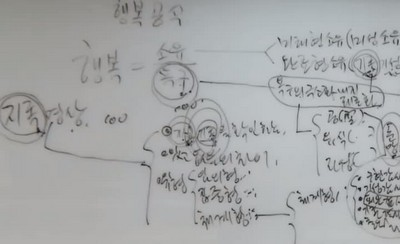
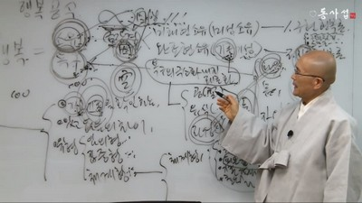

一般課程 － 22 講 ( 動映像받아쓰기) －
第 9 講 知足 暝想
안녕들하세요. 이번 講義는 知足 暝想입니다. 只今 工夫하게 되는 知足 暝想의 위상을 알기 爲해서 簡單하게 幸福 공식을 復習하면서 講義를 이어가도록 하겠습니다. 지난 7강에서 工夫했던 幸福 공식입니다. 幸福은 욕구에 반비례하고 소유에 비례한다. 욕구하는 것이 소유가 될 때 幸福은 온다. 이렇게 되어 있습니다. 소유를 잘 관찰해보면 두 가지 소유가 있다고 했습니다. 우선 미래형 소유가 있습니다. 미래형 소유라는 말을 쓰기 전에는 미성소유라고 했습니다. 미래에 있을 소유, 또는 아직 이루지 않은 소유, 이런 뜻이었어요. 그리고 완료형 소유가 있습니다. 완료형 소유는 완료형이라는 말을 쓰기 이에는 旣存旣成이라고 했습니다. 이미 있는 것과 이미 이룬 것이란 뜻입니다. 그래서 이 미래형 소유에서 구현 幸福論이 나옵니다. 제 7강에서 구현 幸福論의 留念 점 두 가지를 이야기했는데 여기에는 하나를 덧붙여 세 가지를 留念하면 좋습니다.
구현 幸福論은 앞으로 구현해서 幸福해지리라 하는 심리과정입니다. 여기서 留念할 것은 구현해 가는 것도 참 幸福하다는 것입니다. 구현하겠다고 꿈을 꿀 때 幸福하지요. 그렇지요? 또 구현해 가는 過程은 어떻습니까? 그 過程자체가 쏠쏠한 幸福입니다. 또 구현이 됐다 하게 되면 어떻습니까? 이제 진짜 幸福입니다. 또 구현이 못됐다 할 때도 한 생각 잘 돌리면 幸福해질 수도 있는 것입니다. 左右之間 구현해 가는 것도 幸福이 되기 때문에 70 억 인류 전부가 구현 幸福論을 가지고 있다는 말입니다. 그 다음에 留念해야 될 것은 구현을 할 바에야 제대로 하기 爲 해서 구현의 原理를 손에 확실히 쥐고, 原理에 相應하는 구현의 길을 걸어라 하는 것입니다. 그 다음에 세 번째는 무엇이었지요? 구현해 가는 길에는 거의 필연的으로 스트레스가 따르는 법인데 스트레스 최소화의 길이 있다고 하면 그 길을 잡아라, 하는 것이었습니다. 구현 幸福論에서 이야기 될 수 있는 것은 이程度 입니다.
그 다음에 旣存旣成, 완료형 소유에 주목할 때 무엇이 온다고 했지요? 바로 知足幸福論 이 만들어진다는 것입니다. 只今은 그 知足 暝想 講義 時間입니다. 知足幸福論 에서 留念할 점은 旣存과 旣成이 있을 때 旣存에 강력 집중해야 한다는 것입니다. 그래야 知足幸福論 으로 넘치는 소유 속에 이미 있구나가 확연해져요. 旣成에 집중하게 되면 내가 넘치는 幸福 속에 있다는 심리상태에 도달하기가 꽤 어렵습니다. 이 旣成 부분에 집중하려고 하기 때문에 앞으로 이루어서 幸福해지리라라는 생각이 보태지면서 人生이 스트레스로 변해버리게 됩니다.
그런데 旣存에 주목하면 이미 있는 것으로 너무너무 무한소유다 하게 되는 것입니다. 旣存소유라고 되면 얼른 떠오르는 것에는 무엇이 있습니까? 바로 이 마음이 있습니다. 이 마음이 旣存입니다. 마음 자체가, 이 혼이 이미 있지 않습니까? 혼은 내가 노력해서 만든 것이 아닙니다. 이미 있어요. 또 몸도 이미 있습니다. 그 다음엔 自然을 떠올려 보세요. 自然. 自然은 내가 만든 것 아니잖아요. 이미 있어요. 自然을 좀 볼까요? 공기 있지요? 공기. 여러 分들이 만들었어요? 아니, 이미 있습니다. 물 어때요? 물. 지구의 중력은 또 어때요? 중력이 없으면, 중력에 하자가 오게 되면 우리는 존재할 수가 없습니다. 또 宇宙의 질서가 있습니다. 질서, 등등등등. 이러한 것에 집중을 해야 이미 넘치는 소유 속에 있다고 하는 것이 확연해 지게 됩니다. 이 時間은 바로 이 知足 暝想을 합니다.
나온 김에 이 욕구까지 살짝 整理해 봅시다. 욕구의 극소화 내지 제로화를 通해서 욕구가 적어져버리면 소유가 적더라도 幸福이 많아진다는 논리입니다. 또 욕구 제로화의 심리상태를 성자라고 한다고 그랬습니다. 성자는 욕망이, 욕구가, desire가 제로입니다. 必要하니까 그것을 할 뿐인 것이지 거기에다 목을 달고 욕망하지 않는다는 말입니다. 그래서 불교사를 보면 空思想이 욕구의 주체와 욕구의 객체 자체가 본래 空하다, 본래 없다는 논법을 펴서 불교의 空思想이 욕구와 相應해서 밥값을 하게 됩니다. 그리고 唯識사상도 있습니다. 唯識사상도 같은 논법입니다. 불교에는 또 自性 사상도 있습니다. 이 自性사상이 묘하게 旣存에 걸려 있어요. 旣存에 걸려 있는 이 自性을 잘 보면 바로 욕구를 제로화 시켜주는 그런 메커니즘을 가지고 있습니다. 이 세 개를 통합해 놓은 것이 頓忘입니다. 제 8강에서 頓忘을 簡單하게 30분 동안 다루었습니다.
자. 只今부터 知足 暝想 講義를 하는데 여러 分들, 知足 暝想하게 되면 우선 무엇이 떠오릅니까? 무엇이 떠오르지요? 이미 넘치는 소유 속에 있다는 생각이 확연히 떠올라야 합니다. 그러면서 징징 끝~하는 것이 딱 떠오르는 것이 좋습니다. 징징~은 어떨 때 합니까? 징징~은 어떨 때 하지요? 욕구불만 상황에서 징징대지 않아요? 그런데 이미 넘치는 소유 속에 있으니 욕구불만이라고 하는 심리는 있을 수 없습니다. 그러니까 知足 暝想은 幸福을 보장해 주고, 내 속에서 불평불만을 지워버립니다. 그래서 知足 暝想은 대단히重要합니다. 같은 욕구를 다루는 超越 暝想은 특별한 사람만 하는 감이 있을 수 있습니다. 물론 超越 暝想 도 누구나 해야지요. 그런데 이 知足 暝想이야말로 모두의 것입니다.

지족 暝想이야말로 모두의 것이다. 욕구를 다루는 것은 스님들이나 하라고 놔두라도 이것은 世上 사람들이라면 누구나 할 수 있고 해야 됩니다. 이 世上 사람들이 知足에서 100점을 맞고 욕구 問題에서도 100점 맞는다면 참 좋지요. 同事攝에서는 知足 暝想도 100점짜리가 되고, 욕구 제로화 暝想도 100점짜리가 되자는 운동을 하고 있지 않습니까. 자, 知足 暝想입니다. 어떻게 해서 넘치는 幸福 속에 있음을, 넘치는 소유, 넘치는 幸福 속에 있음을 확연하게 首肯할 것인가. 이것이 知足 暝想의 노림 포인트입니다. 여러分 들 어떻습니까? 어떻게 해야 내가 넘치는 소유, 넘치는 幸福 속에 있음을 首肯하겠어요? 어찌해야 할까요? 簡單합니다. 이미 있고 이미 이룬 것에 집중을 하면 됩니다. 이미 있고, 이미 이룬 것에 집중하라는 것입니다. 여기서 키워드 하나, 《 旣成과 旣存》을 확인하라는 것입니다. 그것을 확인하는 것이 知足 暝想입니다. 우선 旣成도 쏠쏠하니 좋아요. 여러分 들의 旣成을 한番 보십시오. 나는 旣成하게 되면 기본 的으로 世上 사람들이 12년간 교육을 받았다는 것을 꼽습니다. 12년간 학문을 했다는 것입니다. 初等 學校 6년, 중학교 3년, 고등학교 3년입니다. 대학 나왔다고 하면 16년이지요? 요새는 대학을 거의 누구라도 나오는 것이니까 16년은 무엇인가를 배우고 익혔어요. 그 旣成, 대단한 것입니다. 그것의 있고 없음의 차이를 생각해 보십시오. 아예 12년 간, 16년 간 전혀 學校 문턱을 가지 않고 自然인으로 그냥 살았다고 상상해보세요. 그것에 비하면 고등학교 나온程度의 지식이다 하면 이것은 존경스러운 경지입니다. 그러니까 이 旣成을 무시하자는 건 아니어요. 그런데 旣存이 더重要 하고 또 아주重要하기 때문에 이 부분에 더 집중해야 된다고 하는 것입니다. 그래서 旣成 도 그러한 式으로 보면서 感謝감사감사감사 할 필요가 있고, 드디어 이미 있는 것을 感謝감사하게 될 때 知足 暝想은 완료된다고 했습니다.
기존, 이미 있는 것이 정말 感謝로다 하기 爲해서는 여러分들이 旣存을 어느程度 범주화 시킬 필요가 있습니다. 旣存을 범주화 시켜서 가만히 뜯어봐요. 마음, 感謝하다. 마음이 感謝하다는 논지가 속에서 얼른 안 떠오르면 있고 없음의 차이를 생각해 보십시오. 그러니까 知足 暝想을 할 때는 있고 없음의 차이라고 하는 이 키워드를 놓치지 않고 써야 합니다. 자, 몸 感謝하다. 몸이 없다고 하면은 人生의 의미가 없어져 버리지. 내 人生에, 내 歷史에 몸이 없으면, 마음이 없으면, 몸이 없으면 모든 의미가 없어져버립니다. 그러니. 몸 感謝합니다.
지족 暝想을 하는 방법엔 세 가지 유형이 있습니다. 임의형 知足 暝想, 집중형 知足 暝想, 體系형 知足 暝想입니다. 내 境遇는 수행점검표의 知足 暝想에 동그라미를 칠 때는 體系형도 해요. 그런데 보통은 늘 임의형으로 합니다. 임의형은 한 가지만 떠올리면서 感謝하다고 하고 그냥 동그라미를 치는 겁니다. 한 가지만 하고도 동그라미를 치니 얼마나 쉬워요? 아직 공기 깨끗하니 感謝하다 하고서 동그라미를 치십시오. 눈을 뜨고 보면서 아직 내 눈 건강하지 않느냐 너무 感謝하다 하고서 동그라미 칩니다. 그러니까 知足 暝想에 동그라미 치기는 식은 죽 먹기입니다.
그 다음 집중형은 어때요? 한 가지를 두고서 여러 측면으로 생각하는 것, 그것에 집중해서 여러 측면으로 보는 것이 집중형입니다. 여러分들이 一般課程課程에서 주전자 知足 暝想을 해보셨지요? 주전자 暝想이 집중형 知足 暝想입니다.
그 다음은 體系형입니다. 同事攝에서는 體系형을 많이 권장합니다. 體系형은 조금 時間이 걸립니다. 體系형으로 마음 感謝, 몸 感謝로부터 始作 해서 가정, 소속 共同體, 지역 사회, 나라, 지구, 태양계, 宇宙 이런 式으로 펼쳐 나갑니다. 이런 式 으로 體系형 知足 暝想 을 해보는 것이 좋습니다. 이 體系형은 다양하게 있을 수 있습니다. 나와 내 주변사람과 그 다음에 사물, 동심원을 이렇게 셋으로 할 수도 있고 방금 말했던 대로 동심원을 10 개로 할 수도 있습니다. 또 體系형으로 아주 좋은 것이 있습니다. 구현해가는 내 人生참 感謝하다. 구현감사가 됩니다. 구현감사. 그리고 이미 이룬 것, 旣成 感謝하다. 내가 12년 간을 工夫했지 않느냐. 아주아주 感謝하다. 旣成쪽 感謝의 하나로 은혜 感謝도 해 보십시오. 내가 이것을 被恩감사라고 한 번 이름을 만들어 봤어요. 被恩. 은혜 입은 것을 感謝하는 것입니다. 被恩감사하면 무엇이 떠오릅니까? 交流 四德이 떠올라야 합니다. 交流 四德에서 이 부분을 집중的으로 다루고 있지요. 이것, 대단히 좋지 않습니까. 이런 것도 이 體系형 속에다가 넣을 수 있어요. 그 다음엔 旣存에 對한 感謝 입니다. 그리고 超越도 하나의 感謝로 넣으면 좋습니다. 이런 式으로 體系형 知足 暝想을 한다는 것은 知足 暝想으론 하나의 대형 暝想 입니다. 이러한 式으로 동심원 10개를 그려가면서 體系형으로 만들어 놓은 것이 修心 暝想산책에서 대서특필하고 있는 마음부터 宇宙의 대 自然 까지의 感謝 暝想입니다. 이런 式으로 해 갈 때 여러分들 속에서 계명처럼 하나가 확 올라오는 마음이 있어야 합니다.

지족 暝想, 음~ 그렇게 하면 知足 暝想됐는데. 知足 暝想그렇게 하면 되겠어. 이제 알았어, 라고 생각을 하면서 知足 暝想 工夫를 제법 했다고 생각합니다. 그런데 실제로 知足인품이 되지 않고 知足 暝想하는 방법만 선명하게 알았다면 어디다 써먹을 것입니까? 써먹을 데는 있지요. 다른 사람에게 知足 暝想을 가르칠 때는 써먹을 수도 있어요. 그것은 모르는 것에 비하면 훌륭합니다. 그런데 본인이 知足인품이 되려면 어떻게 해야 되겠어요? 한 동안, 한 세월이라고 하면은 너무 까마득하게 들릴 것 같아서 세월이라는 말은 뺐는데 한 동안을 수행점검표 知足란에 계속 동그라미 치는 일을 하다보면 자기 속에서 무엇인가 어느 임계선을 넘어간 감을 느끼게 됩니다. 그래서 나는 정말 징징이 이제 끝났구나 하는 것이 느낌상 확연하게 됩니다. 재미있는 것은 확연해졌는데 또 그 다음에 또 반사的으로 징징이 또 나오고 한다는 것입니다. 확연해진 程度가 되었다고 해서 暝想의 완료냐. 이건 아니라는 말입니다. 그래서 知足인품의 완결되려면 단순 반복, 철저한 반복이 맞습니다. 그러니 知足 暝想에 동그라미치는 일을 한동안 해보는 겁니다. 어떻습니까? 내 속에 징징이 끝난 狀態로 하루하루 산다면 얼마나 좋겠어요.
내가 늘 이야기를 해서 듣기 싫을 수도 있는데… 용추사 시절입니다. 그 때 谷口의 感謝철학을 접해가지고 그저 感謝감사감사감사…… 그저 눈에 보이는 거, 귀에 들리는 거, 생각되어지는 거 전부 感謝 감사감사 하던 시절이 그 용추사 시절이었습니다. 나중에 딱 어느 임계선을 넘어서니까 몸무게 자체가 가뿐해지고 이렇게 걸어가는데 황홀한 어떤 구름 위를 이렇게 유영하는 것과 같은 그런 감이 막 들어버리더라고요. 그래서 내가 미치게 感謝 法問을 했었다니까요. 感謝법문만, 매일 感謝법문만 하는 거예요. 안에서도 感謝 법문, 밖에서 가서 뭐 할 거 있어도 感謝법문. 그러니까 정조 큰스님께서는 당신을 따르는 신도들에게 백장암으로 感謝 法問 들으러 오소, 라고 까지 했어요. 그러면서 나를 感謝의 종주로 만들어 놓았습니다.
나는, 그 임계치를 넘어서서 허공에 발도 안대고 유영하는 것 같은 감이 들던 나는 只今 72세입니다. 72세인 내가 징징 끝났느냐 하면 징징이 아직 안 끝났어요. “아니, 그러면 아니지 않아요. 스님이 아직도 징징이 안 끝났다면 누구에게 징징 끝내라고 할 수 있겠어요?” 이러겠지요? 그런데 징징 하더라도 노 프러블럼 이예요 . 징징이 瞬間 나온다고 하더라도 그것은 노 프러블럼. 징징 아닌 瞬間에 넘치는 幸福으로 사는 것으로 너무너무 좋고, 무한으로 사는 것 너무 좋습니다. 내가 只今 말하려고 하는 것은 징징이 100.00 % 끝나는 것이 만만한 일이 아님을 이야기한 것이지 “ 龍陀 스님 보고 우리가 실망해서 무엇을 보고 가겠어. 기준치가 그렇게 흔들리고 있는데” 하라는 건 아닙니다. 여러 分들, 龍陀스님의 반만이라도 우선 해보고, 그 임계치, 임계선이라도 넘어가는 체험을 좀 해보십시오. 옛날에는 징징 사태가 되면 그 놈 감추느라고 애를 썼어요. 只今은 안 감춰요. 그것을 안 감추고 산다는 것이 너무 좋아요. 안 감추고 했더니 “개 같은 놈의 새끼들” 한다든지, 막 이런 式으로 확 쏟아 놓아도 아무렇지 않아요. 물론 당하는 사람은 큰 충격을 받을 수 있기 때문에 그건 고려를 합니다. 知足 暝想의 완료는 징징 끝이라고 말하면서 내가 이 고백을 하는 것은 인간을 성자를 만들어놓고, 그 성자를 기계로 만들어 버리지는 말아라 하는 겁니다.
지족 暝想을 해가고 해가고 해가고 해가게 되면 그 상승선이 서서히 높아지다가 어느 瞬間에 껑충 높아져 버리는 시점이 있습니다. 이것이 내가 임계선이라고 하는 겁니다. 그 知足 暝想은 바로 소유의 완료입니다. 소유의 완료. 소유 완료가 되었으니 幸福 완료가 된 셈 아닙니까. 그렇지요. 욕구는 幸福論에서 슬쩍 다루었고 또 앞으로 非我 暝想하면서도 다루겠지만, 일단 소유측과 욕구측에서 소유측 완료의 길은 知足 暝想입니다. 知足 暝想을 通해서 여러 分들이 정말 정말 幸福해지시고 정말 정말 징징을 끝내시라 그거예요.
앞부분에서 自性이야기를 했지요? 이 自性이라고 하는 것은 마음하고 같은 맥락의 소리입니다. 내가 내 마음이라고 할 때의 그 마음은 때가 끼어 있고, 검불을 많이 걸치고 있는 마음입니다. 그런데 검불이 걸쳐져 있지 않는 마음, 검불이 없는 狀態 의 마음이 딱 경험이 됩니다. 그렇게 딱 경험이 될 때 그 마음을 自性이라고 합니다. 自性 . 스스로 마음입니다. 또 본래 있었던 마음. 그것입니다. 본래 있었던 마음. 경험을 通해서 무언가 덕지덕지 붙은 것이 아니고 본래 있었던 그 마음. 그 마음을 발견하면 이 소유가 무한대로 변하게 됩니다. 그러니까 소유를 通해서 무한대가 된다고 하면 욕구는 어떻겠습니까? 욕구는 별로 애쓰지 않더라도 오케이가 됩니다. 논리적으로는 그럽니다. 그런데 현실은 소유 쪽에서 상당히 노력해서 무한이라도 잡고 있는 듯한데, 이 욕망이 묘하게 있어서 소유 쪽에서 무한을 노래하려고 하는데 욕구가 자꾸 問題를 슬쩍슬쩍 일으켜서 소유 쪽의 온전함에 자꾸 상처를 냅니다. 그러니까 이 욕구를 다루어야 되겠구나 하는 자각이 禪宗에서 나온 것입니다. 禪宗에서 自性을 파지한 大道人들이 무엇을 권했지요? 金剛經을 권했습니다. 禪宗은 “너희들은 自性만 파지하면 돼. 自性 만 파지하면 되는 것이지 金剛經그런 거 필요없어.” 딱 그래야 할 종입니다. 그런데 自性把持 종단인 禪宗에서 욕구를 제로화시키는 敎宗의 경전인 金剛經을 권한 것입니다.
금강경 하면 무엇이 떠오릅니까? 金剛經에는 空이라는 글자가 하나도 없어요. 空자가 하나도 없으면서 空思想을 온전히 드러내는 것이 金剛經입니다. 禪宗은 그 金剛經을 所衣經典으로 추천해서 禪宗의 기본 교과서로 삼고 있습니다. 이 金剛經의 사상은 自性 사상이 아니라 욕구를 극소화시키는 空思想, 卽非사상 입니다. 그러면 金剛經이 어째서 이 自性 사상과 이어지냐 하면 卽非가 되니까 저절로 自性이 果로 확연하게 체험됩니다. 그러니까 金剛經 은 因位가 되고 禪宗의 自性은 果位가 되는 겁니다. 이 因位가 허술하니까 이 自性 놀음에 問題가 붙는구나 하는 것이 현실的으로 생기게 된 것입니다. 여러 分들이 마음공부를 이리저리 한다고 해도 현실에 부딪치게 되면 늘 걸리는 것과 같이 여기서도 마찬가집니다. 그러니까 自性만 능사로 내걸어 놓고, 깨어있음만 능사로 걸어놓는 그런 일을 하지 않고 강력하게 金剛經을 강조했고 六祖 스님은 金剛經하나만 뚫으면 다 된다고 할程度로 金剛經을 강조했던 것입니다. 왜 金剛經을 강조했다고 했지요? 自性을 果로 가져다주는 因의 작업을 바로 金剛經이 시켜주기 때문입니다. 그럴 수밖에 없지 않겠어요? 卽非사상입니다. 무엇 하면 卽非무엇 해서 그것이 아니라고 합니다. 知足의 일환으로 自性까지 언급하며 살펴보았습니다.
左右之間 오늘 이 時間에 여러分들에게 知足 이 주어졌습니다. 이미 넘치는 OK 속에 있다. 이미 있다. 이것을 거듭 확인하는 삶을 죽을 때까지 하시오 하면 안 해버린다고 하겠지요. 그러니 한동안 하십시오. 한동안 하면 스스로 체험 的 으로 알게 됩니다. 그 임계선을 살짝 넘어보세요. 임계선이 한番만 딱 오는 건 아닙니다. 왔다가 또 오고 또 오고 그럽니다. 그 임계선 하나만 넘을 程度만이라도 해보십시오. 그 때, 여러分들은 “나는 이제 幸福자다!” 라고 해도 될 것입니다.
感謝합니다.